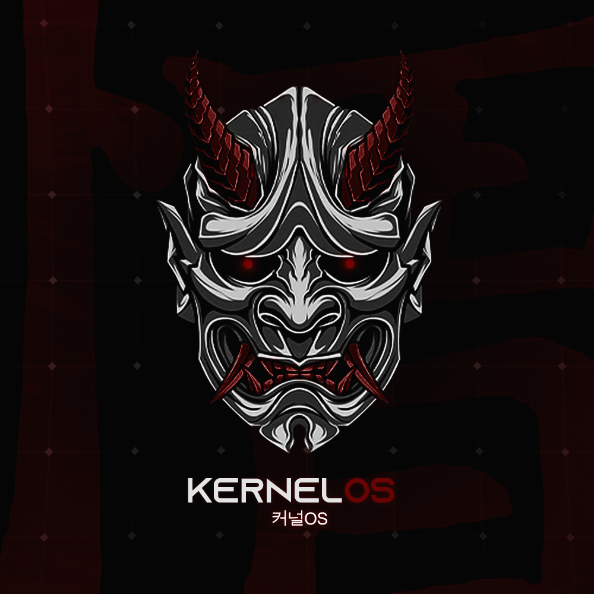

El sistema definitivo para el Gaming
KernelOs
Un proyecto personal sin animos de lucro creado por K3rnelPan1c, con el propósito de optimizar la velocidad y el rendimiento de tu computadora

Un proyecto personal sin animos de lucro creado por K3rnelPan1c, con el propósito de optimizar la velocidad y el rendimiento de tu computadora
Aprovecha al máximo el hardware de tu PC instalando componentes y desactivando servicios.
Aumenta la velocidad de tu PC con configuraciones pre-configuradas para un mayor rendimiento
Una comunidad 100% activa la cual esta dispuesta a ayudarte con cualquier duda o problema que tengas